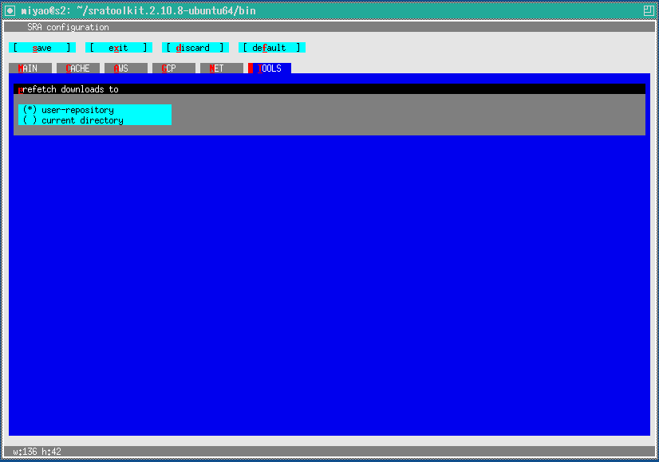

Setup of fastq-dump
[Link to top page]
Download Ubuntu Linux 64 bit architecture - non-sudo tar archive from download site from NCBI
tar xvfz sratoolkit.2.10.8-ubuntu64.tar.gz
cd sratoolkit.2.10.8/bin
./vdb-config --interactive
Bellow is the MAIN window of vdb-config.

Input Red character to move window or next action.
In the 'MAIN' window, select 'Enable Remote Access'.

Push c key to move 'CACHE' window.
If you want to change of user-repository, push o key and specify full path of directory.
Push u key and then input +. Value of RAM usage will be increased.
In this case, 1MB is specified.

'TOOLS' window specifies directory for prefetch.
Push s key for saving settings and then push x to exit the vdb-config.
Link extracted fastq-dump to /usr/bin/fastq-dump. For example,
sudo ln -s /home/miyao/sratoolkit.2.10.8-ubuntu64/bin/fastq-dump /usr/bin/fastq-dump